library(tidyverse) # Para diferentes operaciones
library(readxl) # Para la lectura de archivos de Excel
library(corrplot) # Para las figuras de elipses
library(vegan) # Estimadores de diversidad
library(ggrepel) # Rótulos a los puntos de figuras en ggplot2
library(kableExtra) # Edición de las tablas
library(viridis)
# Instalar la última versión de github para iNEXT
# install.packages('devtools')
library(devtools)
#install_github('AnneChao/iNEXT.3D')
library(iNEXT.3D)
#install_github('AnneChao/iNEXT.4steps')
library(iNEXT.4steps)Taller9. Diversidad alfa
Resumen
El presente ejercicio consiste en el procesamiento inicial de los datos de la salida de campo realizada por los estudiantes de ecología 1, del programa de Biología en el semestre 2023-II.
Paso a paso para la organización de los datos de los taxones y ambientales.
Paso 1. Cargar Librerías
Elaborar un fragmento: CTRL+ALT+I, Correr el fragmento: CTRL+SHIFT+ENTER, Correr una línea: CTRL+ENTER
Paso 2. Base de datos de los taxones
La base de datos con los 40 taxones se llamará biol. La base con con las 18 variables ambientales se llamará amb y se cargará más adelante (Table 1).
# Lectura de la base de datos xlsx
biol <- read_xlsx("datos.gral.xlsx", "Taxones1")
# View(biol)
# str(biol) # taxones 3:33
# Impresión de la tabla con los datos
biol %>%
kbl(caption = "", booktabs = F,longtable = T) %>%
kable_classic(full_width = F, html_font = "Cambria")| Sitio | Microh | Baetidae | Belidae | Blephariceridae | Calopterygidae | Ceratopogonidae | Chironomidae | Coenagrionidae | Corydalidae | Crambidae | Dixidae | Dugesiidae | Elmidae | Empididae | Gomphidae | Hydrobiidae | Hydropsychidae | Leptoceridae | Leptohyphidae | Leptophlebiidae | Libellulidae | Limnesiidae | Lumbriculidae | Naucoridae | Oligoneuriidae | Perlidae | Psephenidae | Psychodidae | Ptilodactylidae | Simuliidae | Tipulidae | Veliidae | Total |
|---|---|---|---|---|---|---|---|---|---|---|---|---|---|---|---|---|---|---|---|---|---|---|---|---|---|---|---|---|---|---|---|---|---|
| Arimaca | Arena | 0 | 0 | 0 | 0 | 0 | 2 | 0 | 0 | 0 | 0 | 0 | 2 | 0 | 0 | 0 | 0 | 2 | 0 | 0 | 0 | 0 | 0 | 1 | 0 | 1 | 0 | 0 | 0 | 0 | 0 | 0 | 8 |
| Arimaca | Grava | 14 | 0 | 0 | 1 | 0 | 0 | 3 | 0 | 0 | 0 | 0 | 11 | 0 | 0 | 4 | 3 | 0 | 0 | 13 | 0 | 2 | 1 | 0 | 0 | 5 | 0 | 0 | 1 | 5 | 0 | 0 | 63 |
| Arimaca | Hoja | 31 | 0 | 0 | 0 | 1 | 1 | 0 | 1 | 0 | 0 | 0 | 10 | 0 | 0 | 0 | 0 | 2 | 5 | 4 | 0 | 0 | 0 | 0 | 0 | 0 | 0 | 0 | 0 | 13 | 0 | 2 | 70 |
| Caracoli | Arena | 3 | 2 | 0 | 0 | 0 | 1 | 0 | 0 | 0 | 0 | 0 | 12 | 0 | 1 | 0 | 2 | 3 | 0 | 0 | 0 | 0 | 0 | 7 | 0 | 1 | 0 | 0 | 0 | 5 | 0 | 0 | 37 |
| Caracoli | Grava | 11 | 0 | 0 | 0 | 0 | 1 | 0 | 1 | 0 | 0 | 0 | 10 | 1 | 2 | 0 | 10 | 3 | 10 | 34 | 7 | 0 | 0 | 2 | 1 | 5 | 0 | 0 | 0 | 1 | 0 | 1 | 100 |
| Caracoli | Hoja | 4 | 0 | 0 | 0 | 0 | 14 | 0 | 0 | 0 | 0 | 0 | 18 | 0 | 0 | 0 | 3 | 6 | 0 | 1 | 1 | 0 | 1 | 0 | 0 | 5 | 0 | 0 | 2 | 7 | 0 | 0 | 62 |
| PozoAzul | Arena | 14 | 0 | 0 | 0 | 0 | 8 | 0 | 0 | 0 | 0 | 0 | 4 | 0 | 1 | 0 | 0 | 18 | 0 | 3 | 4 | 0 | 0 | 9 | 1 | 0 | 0 | 0 | 0 | 2 | 2 | 25 | 91 |
| PozoAzul | Grava | 31 | 0 | 0 | 0 | 0 | 7 | 0 | 2 | 0 | 0 | 1 | 5 | 0 | 1 | 0 | 4 | 4 | 0 | 36 | 14 | 0 | 4 | 2 | 0 | 16 | 1 | 1 | 7 | 0 | 0 | 1 | 137 |
| PozoAzul | Hoja | 50 | 2 | 1 | 1 | 1 | 4 | 0 | 8 | 1 | 1 | 0 | 56 | 0 | 5 | 1 | 11 | 19 | 6 | 10 | 11 | 0 | 1 | 10 | 4 | 53 | 0 | 0 | 2 | 15 | 1 | 8 | 282 |
–
2.1 Abreviación de los nombres de los taxones (biol1).
Si los nombres de los taxones son demasiado largos, se pueden abreviar con el número de letras que se requiera (ej: minlength = 4), esto para que las figuras que incluyan a los taxones, no queden tan saturadas de texto (Table 2). La base de datos biol.r, incluye a los los nombres abreviados de los taxones.
# Nombres abreviados de los taxones
biol1 <-
biol[,c(-1,-2)] %>%
rename_with(~ abbreviate(.x, minlength = 4))
# Impresión de la tabla con los datos
biol1 %>%
kbl(caption = "", booktabs = F,longtable = T) %>%
kable_classic(full_width = F, html_font = "Cambria")| Batd | Beld | Blph | Clpt | Crtp | Chrn | Cngr | Cryd | Crmb | Dixd | Dgsd | Elmd | Empd | Gmph | Hydrb | Hydrp | Lptc | Lpth | Lptp | Lbll | Lmns | Lmbr | Ncrd | Olgn | Prld | Psph | Psyc | Ptld | Smld | Tpld | Veld | Totl |
|---|---|---|---|---|---|---|---|---|---|---|---|---|---|---|---|---|---|---|---|---|---|---|---|---|---|---|---|---|---|---|---|
| 0 | 0 | 0 | 0 | 0 | 2 | 0 | 0 | 0 | 0 | 0 | 2 | 0 | 0 | 0 | 0 | 2 | 0 | 0 | 0 | 0 | 0 | 1 | 0 | 1 | 0 | 0 | 0 | 0 | 0 | 0 | 8 |
| 14 | 0 | 0 | 1 | 0 | 0 | 3 | 0 | 0 | 0 | 0 | 11 | 0 | 0 | 4 | 3 | 0 | 0 | 13 | 0 | 2 | 1 | 0 | 0 | 5 | 0 | 0 | 1 | 5 | 0 | 0 | 63 |
| 31 | 0 | 0 | 0 | 1 | 1 | 0 | 1 | 0 | 0 | 0 | 10 | 0 | 0 | 0 | 0 | 2 | 5 | 4 | 0 | 0 | 0 | 0 | 0 | 0 | 0 | 0 | 0 | 13 | 0 | 2 | 70 |
| 3 | 2 | 0 | 0 | 0 | 1 | 0 | 0 | 0 | 0 | 0 | 12 | 0 | 1 | 0 | 2 | 3 | 0 | 0 | 0 | 0 | 0 | 7 | 0 | 1 | 0 | 0 | 0 | 5 | 0 | 0 | 37 |
| 11 | 0 | 0 | 0 | 0 | 1 | 0 | 1 | 0 | 0 | 0 | 10 | 1 | 2 | 0 | 10 | 3 | 10 | 34 | 7 | 0 | 0 | 2 | 1 | 5 | 0 | 0 | 0 | 1 | 0 | 1 | 100 |
| 4 | 0 | 0 | 0 | 0 | 14 | 0 | 0 | 0 | 0 | 0 | 18 | 0 | 0 | 0 | 3 | 6 | 0 | 1 | 1 | 0 | 1 | 0 | 0 | 5 | 0 | 0 | 2 | 7 | 0 | 0 | 62 |
| 14 | 0 | 0 | 0 | 0 | 8 | 0 | 0 | 0 | 0 | 0 | 4 | 0 | 1 | 0 | 0 | 18 | 0 | 3 | 4 | 0 | 0 | 9 | 1 | 0 | 0 | 0 | 0 | 2 | 2 | 25 | 91 |
| 31 | 0 | 0 | 0 | 0 | 7 | 0 | 2 | 0 | 0 | 1 | 5 | 0 | 1 | 0 | 4 | 4 | 0 | 36 | 14 | 0 | 4 | 2 | 0 | 16 | 1 | 1 | 7 | 0 | 0 | 1 | 137 |
| 50 | 2 | 1 | 1 | 1 | 4 | 0 | 8 | 1 | 1 | 0 | 56 | 0 | 5 | 1 | 11 | 19 | 6 | 10 | 11 | 0 | 1 | 10 | 4 | 53 | 0 | 0 | 2 | 15 | 1 | 8 | 282 |
–
2.2 Taxones más abundantes con nombres abreviados (biol2).
El siguiente procedimiento es para cuando tenemos demasiados taxones y requerimos extraer un subgrupo (ej. los más abundantes o los de mayor promedio), para explorar sus patrones de relaciones o diferencias. La base de datos biol1 es la que se construyó anteriormente con los nombres abreviados de todos los taxones. La base de datos biol2 contiene a los 15 taxones de mayor abundancia (Table 3).
# Extraer los promedios de las abundancias
prom <- colMeans(biol1[,1:31]) # Columna 32 se excluye por ser el total de ab.
# Extraer los 15 taxones más abundantes. FALSE muestra las 15 menos abundantes
ab <- names(sort(prom, decreasing = TRUE)[1:15])
# Crear un nuevo dataframe con las dos columnas seleccionadas
biol2 <- data.frame(Sitio = biol[,1], biol1[, ab])
biol2 %>%
kbl(caption = "", booktabs = F,longtable = T) %>%
kable_classic(full_width = F, html_font = "Cambria")| Sitio | Batd | Elmd | Lptp | Prld | Lptc | Smld | Chrn | Lbll | Veld | Hydrp | Ncrd | Lpth | Cryd | Ptld | Gmph |
|---|---|---|---|---|---|---|---|---|---|---|---|---|---|---|---|
| Arimaca | 0 | 2 | 0 | 1 | 2 | 0 | 2 | 0 | 0 | 0 | 1 | 0 | 0 | 0 | 0 |
| Arimaca | 14 | 11 | 13 | 5 | 0 | 5 | 0 | 0 | 0 | 3 | 0 | 0 | 0 | 1 | 0 |
| Arimaca | 31 | 10 | 4 | 0 | 2 | 13 | 1 | 0 | 2 | 0 | 0 | 5 | 1 | 0 | 0 |
| Caracoli | 3 | 12 | 0 | 1 | 3 | 5 | 1 | 0 | 0 | 2 | 7 | 0 | 0 | 0 | 1 |
| Caracoli | 11 | 10 | 34 | 5 | 3 | 1 | 1 | 7 | 1 | 10 | 2 | 10 | 1 | 0 | 2 |
| Caracoli | 4 | 18 | 1 | 5 | 6 | 7 | 14 | 1 | 0 | 3 | 0 | 0 | 0 | 2 | 0 |
| PozoAzul | 14 | 4 | 3 | 0 | 18 | 2 | 8 | 4 | 25 | 0 | 9 | 0 | 0 | 0 | 1 |
| PozoAzul | 31 | 5 | 36 | 16 | 4 | 0 | 7 | 14 | 1 | 4 | 2 | 0 | 2 | 7 | 1 |
| PozoAzul | 50 | 56 | 10 | 53 | 19 | 15 | 4 | 11 | 8 | 11 | 10 | 6 | 8 | 2 | 5 |
Nota: A partir de aquí se organizan los datos de abundancia, extrayendo un dato promedio por cada sitio, para que sean acoplables a los datos promedio de las variables ambientales por cada tramo.
–
2.3 Promedios de los 15 taxones más abundantes (biol3).
La base biol3 contiene a los promedios por cada sitio evaluado. Esto se realiza para que esta base sea acoplable con la de promedios de variables ambientales (amb1) y se puedan relacionar en el componente gráfico. Se excluye a la columna Microh, debido a que es categorica y no se le puede extraer el promedio (Table 4).
# Promedios de abundancia de los taxones
biol3 <-
biol2 %>%
group_by(Sitio) %>% # Agrupamiento por sitios
summarise(across(everything(), ~ mean(.x, na.rm = TRUE)))
# Impresión de la tabla con los datos
biol3 %>%
kbl(caption = "", booktabs = F,longtable = T) %>%
kable_classic(full_width = F, html_font = "Cambria")
# Complemento opcional al script "summarise" na.rm = TRUE, .names = "{.col}"| Sitio | Batd | Elmd | Lptp | Prld | Lptc | Smld | Chrn | Lbll | Veld | Hydrp | Ncrd | Lpth | Cryd | Ptld | Gmph |
|---|---|---|---|---|---|---|---|---|---|---|---|---|---|---|---|
| Arimaca | 15.00000 | 7.666667 | 5.666667 | 2.000000 | 1.333333 | 6.000000 | 1.000000 | 0.000000 | 0.6666667 | 1 | 0.3333333 | 1.666667 | 0.3333333 | 0.3333333 | 0.000000 |
| Caracoli | 6.00000 | 13.333333 | 11.666667 | 3.666667 | 4.000000 | 4.333333 | 5.333333 | 2.666667 | 0.3333333 | 5 | 3.0000000 | 3.333333 | 0.3333333 | 0.6666667 | 1.000000 |
| PozoAzul | 31.66667 | 21.666667 | 16.333333 | 23.000000 | 13.666667 | 5.666667 | 6.333333 | 9.666667 | 11.3333333 | 5 | 7.0000000 | 2.000000 | 3.3333333 | 3.0000000 | 2.333333 |
Paso 3. Base de datos ambiental
La base de datos amb, contiene a los valores de las variables ambientales tabuladas (Table 5).
amb <- read_xlsx("datos.gral.xlsx", "fquímicos")
amb = amb[,c(-13,-15,-16,-17)]
# Impresión de la tabla con los datos
amb %>%
kbl(caption = "", booktabs = F,longtable = T) %>%
kable_classic(full_width = F, html_font = "Cambria")
# View(amb)
# str(amb) # ambientales 3:26| Sitio | Replica | Temperatura | Conductividad | Oxigeno | Luz | Amonio | Nitrito | Nitrato | Fosfato | Roca | Grava | Sed | Prof.Media | Ancho | Vel.prom | Area | Caudal | Perim | Radio | Prof.Hidra | No.Froude |
|---|---|---|---|---|---|---|---|---|---|---|---|---|---|---|---|---|---|---|---|---|---|
| Arimaca | 1 | 22.3 | 77.2 | 5.21 | 2160 | 1e-04 | 0.0105 | 0.1427 | 0.0883 | 35.71429 | 28.57143 | 7.142857 | 0.2350000 | 6.60 | 0.04 | 1.551000 | 0.0620400 | 7.070000 | 0.2193777 | 0.2350000 | 0.0263580 |
| Arimaca | 2 | 21.8 | 78.4 | 5.33 | 2500 | 1e-04 | 0.0152 | 0.1421 | 0.0927 | 0.00000 | 46.66667 | 6.666667 | 0.2378667 | 6.80 | 0.08 | 1.617493 | 0.1293995 | 7.275733 | 0.2223134 | 0.2378667 | 0.0523975 |
| Arimaca | 3 | 21.9 | 82.1 | 5.31 | 2220 | 1e-04 | 0.0152 | 0.1429 | 0.1689 | 60.00000 | 10.00000 | 0.000000 | 0.2228000 | 9.30 | 0.02 | 2.072040 | 0.0414408 | 9.745600 | 0.2126129 | 0.2228000 | 0.0135350 |
| Caracoli | 1 | 23.2 | 97.4 | 4.83 | 4600 | 1e-02 | 0.0355 | 0.2061 | 0.4780 | 55.55556 | 44.44444 | 0.000000 | 0.3222222 | 3.83 | 0.60 | 1.234111 | 0.7404667 | 4.474444 | 0.2758133 | 0.3222222 | 0.3376451 |
| Caracoli | 2 | 23.1 | 93.9 | 4.82 | 2400 | 5e-02 | 0.0368 | 0.2055 | 0.5765 | 0.00000 | 62.50000 | 0.000000 | 0.2711250 | 5.74 | 0.20 | 1.556258 | 0.3112515 | 6.282250 | 0.2477229 | 0.2711250 | 0.1226965 |
| Caracoli | 3 | 23.0 | 79.8 | 5.14 | 4100 | 3e-02 | 0.0355 | 0.2059 | 0.5855 | 38.46154 | 46.15385 | 0.000000 | 0.3376923 | 5.74 | 0.30 | 1.938354 | 0.5815062 | 6.415385 | 0.3021415 | 0.3376923 | 0.1649102 |
| PozoAzul | 1 | 20.1 | 61.5 | 5.85 | 2820 | 1e-04 | 0.0092 | 0.1650 | 0.5657 | 51.85185 | 33.33333 | 0.000000 | 0.1911538 | 13.40 | 0.06 | 2.561462 | 0.1536877 | 13.782308 | 0.1858514 | 0.1911538 | 0.0438376 |
| PozoAzul | 2 | 20.2 | 62.1 | 5.82 | 4240 | 1e-04 | 0.0179 | 0.1620 | 0.0569 | 22.22222 | 44.44444 | 0.000000 | 0.2900000 | 8.60 | 0.08 | 2.494000 | 0.1995200 | 9.180000 | 0.2716776 | 0.2900000 | 0.0474546 |
| PozoAzul | 3 | 20.1 | 62.2 | 5.81 | 2710 | 1e-04 | 0.0092 | 0.1590 | 0.0703 | 56.25000 | 37.50000 | 0.000000 | 0.2637500 | 7.60 | 0.07 | 2.004500 | 0.1403150 | 8.127500 | 0.2466318 | 0.2637500 | 0.0435400 |
–
3.1 Promedios de las variables ambientales (amb1).
Similar a lo realizado con la base biol1, la base amb1 contiene a los promedios de las variables ambientales por cada sitio evaluado (Table 6). Esto se realiza para que esta base sea acoplable con la de promedios de variables biológicas (biol3 Table 3) y se puedan relacionar en el componente gráfico. Se excluye a la columna Replica, debido a que es categorica y no se le puede extraer el promedio .
# Promedios de variables ambientales
amb1 <-
amb %>%
group_by(Sitio) %>%
summarise(across(-Replica, mean, na.rm = TRUE, .names = "{.col}"))
# Impresión de la tabla con los datos
amb1 %>%
kbl(caption = "", booktabs = F,longtable = T) %>%
kable_classic(full_width = F, html_font = "Cambria")
# print(amb1)
# View(amb1)
# str(amb1)| Sitio | Temperatura | Conductividad | Oxigeno | Luz | Amonio | Nitrito | Nitrato | Fosfato | Roca | Grava | Sed | Prof.Media | Ancho | Vel.prom | Area | Caudal | Perim | Radio | Prof.Hidra | No.Froude |
|---|---|---|---|---|---|---|---|---|---|---|---|---|---|---|---|---|---|---|---|---|
| Arimaca | 22.00000 | 79.23333 | 5.283333 | 2293.333 | 1e-04 | 0.0136333 | 0.1425667 | 0.1166333 | 31.90476 | 28.41270 | 4.603175 | 0.2318889 | 7.566667 | 0.0466667 | 1.746844 | 0.0776268 | 8.030444 | 0.2181013 | 0.2318889 | 0.0307635 |
| Caracoli | 23.10000 | 90.36667 | 4.930000 | 3700.000 | 3e-02 | 0.0359333 | 0.2058333 | 0.5466667 | 31.33903 | 51.03276 | 0.000000 | 0.3103465 | 5.103333 | 0.3666667 | 1.576241 | 0.5444081 | 5.724026 | 0.2752259 | 0.3103465 | 0.2084173 |
| PozoAzul | 20.13333 | 61.93333 | 5.826667 | 3256.667 | 1e-04 | 0.0121000 | 0.1620000 | 0.2309667 | 43.44136 | 38.42593 | 0.000000 | 0.2483013 | 9.866667 | 0.0700000 | 2.353321 | 0.1645076 | 10.363269 | 0.2347203 | 0.2483013 | 0.0449441 |
Paso 4. Exploración gráfica de relaciones y de variaciones.
–
4.1 Relaciones entre todos los taxones.
La siguiente figura se realiza con todos los taxones (cuando no son muchos) y pueden viasualizarse los patrones de sus relaciones entre parejas. Se excluye a las columnas 1 y 2 ([,c(-1,-2)]) por ser categóricas (sitios y microhábitats) (Figure 1).
# Matriz de correlación
M = cor(biol1)
# Figura de correlaciones
corrplot(M, "ellipse", order= "AOE")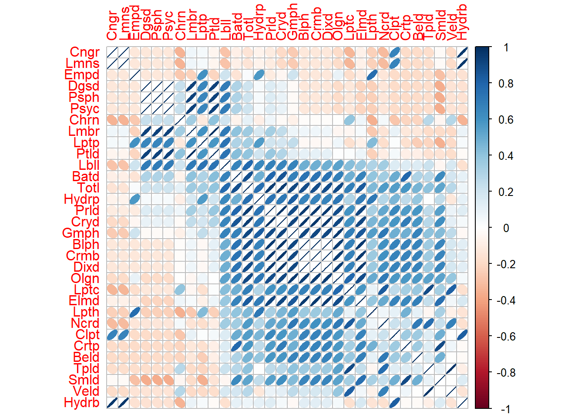
–
4.2 Relaciones entre los 15 taxones más abundantes.
Se sugiere tener una tabla al inicio del informe, que relacione a los nombres completos con sus abreviaturas al frente, para que el lector pueda orientarse mejor. Nota: se puede mejorar la linealización con transformaciones de las variables (ej. Hellinger, log10).
La Figure 2, muestra las relaciones entre las parejas de los quince taxones más abundantes. También se pueden incluir complementos como addCoef.col ="black", number.cex = 0.5, order="AOE", type="upper". En los siguientes enlaces se encuentra información complementaria para estas elipses: corrplot, corrplot.
# Matriz de correlación
M1 = cor(biol2[,-1])
# Figura de correlaciones
corrplot(M1, "ellipse", order= "AOE")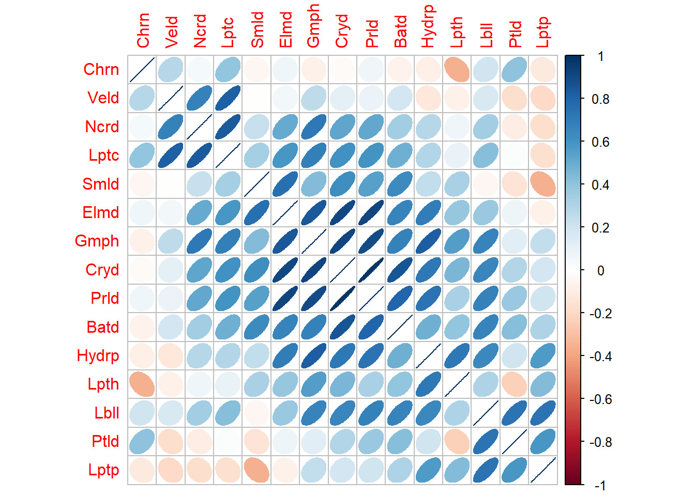
Otra opción que se puede probar es: corrplot.mixed(M, upper="ellipse") (Figure 3).
# Figura de correlaciones
corrplot.mixed(M1, upper="ellipse", order= "AOE", number.cex = 0.7)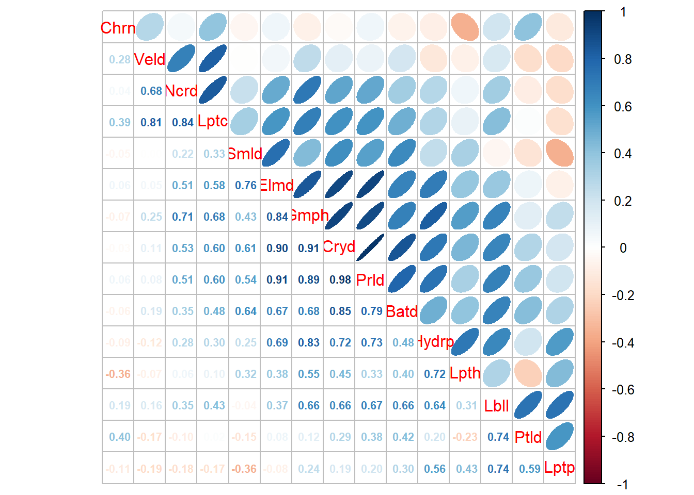
–
4.3 Relaciones entre los promedios de los 15 taxones más abundantes y las variables ambientales.
A continuación se utilizan opciones gráficas para relacionar a las variables biológicas (columnas) a las ambientales (filas), con sus valores promedio por cada sitio (Figure 4). Las elipses azules y rojas muestran las relaciones lineales positivas y negativas entre las parejas de taxones comparadas.
# Matriz de correlación
M = cor(amb1[,-1],biol3[,-1])
# Figura de correlaciones
corrplot(M, "ellipse")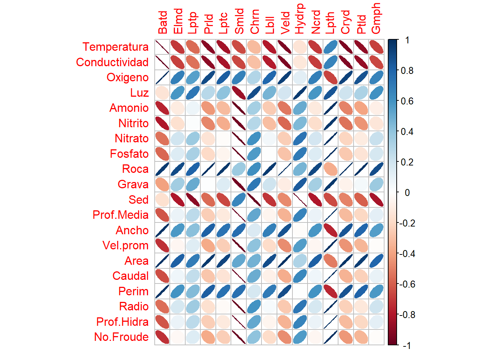
La Figure 5 permite evaluar la relación entre las variables ambientales y todos los taxones, sirviendo de soporte para las figuras de burbujas que se realizarán a continuación, debido a que permite identificar las variables ambientales con mejores relaciones lineales (positivas o negativas), para ser seleccionadas. Para este caso se seleccionará al oxígeno, a la profundidad media (relación negativa) y al amonio (relación positiva), debido a que presentan buenas relaciones con los taxones evaluados (Figure 5).
# Matriz de correlación
M = cor(amb[,c(-1,-2)],biol1)
# Figura de correlaciones
corrplot(M, "ellipse")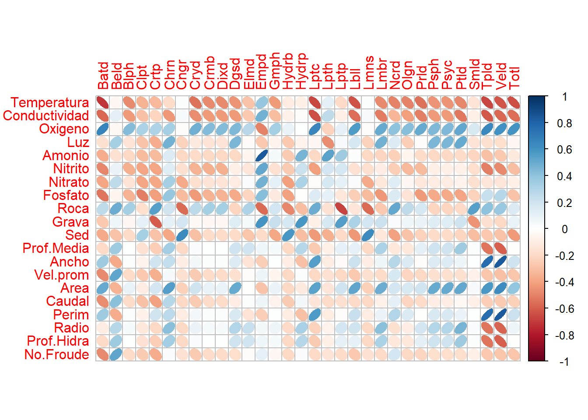
4.4 Relaciones entre todos los taxones y las variables ambientales.
Se relaciona a las especies de peces (eje y), variables ambientales (eje x), colores de las burbujas (fases lunares) y tamaños de las burbujas (abundancias).
Nota: Solo se hará con fases lunares, pero se puede hacer con el resto de factores (horarios y zonas).
# Base de datos con variables ambientales seleccionadas
# Eliminar ambientales que no se usarán
datos1 = datos[,-c(2,3,5,7:12, 14:21)]
# Base de datos en formato largo, sin ambientales
datos1a <-
datos1 %>%
pivot_longer(
cols = -c(Sitio, Oxigeno, Amonio, Prof.Media),
names_to = "Taxas",
values_to = "Abundancia"
)
# Extraer a los valores de abundancias > 0
datos1a <-
datos1a %>%
filter(Abundancia > 0)
# Configurar los factores requeridos
datos1a$Taxas = as.factor(datos1a$Taxas)
datos1a$Sitio = as.factor(datos1a$Sitio)
# Volver factor al resto de ambientales
# Calcular la Abundancia total por grupo, para luego ordenar taxones
Abundancia_order1 <-
datos1a %>%
group_by(Taxas) %>%
summarise(total_Abundancia = sum(Abundancia)) %>%
arrange((total_Abundancia)) %>%
pull(Taxas)
# Ordenar taxones de menor a mayor abundancia
datos1a$Taxas <- factor(datos1a$Taxas, levels = Abundancia_order1)# Resumen estadístico de las variables ambientales seleccionadas
summary(datos[,-c(1, 2,3,5,7:12, 14:53)]) Oxigeno Amonio Prof.Media
Min. :4.820 Min. :0.00010 Min. :0.1912
1st Qu.:5.140 1st Qu.:0.00010 1st Qu.:0.2350
Median :5.310 Median :0.00010 Median :0.2637
Mean :5.347 Mean :0.01007 Mean :0.2635
3rd Qu.:5.810 3rd Qu.:0.01000 3rd Qu.:0.2900
Max. :5.850 Max. :0.05000 Max. :0.3377
Por niveles de Oxigeno
Se observa la mayor concentración de taxones abundantes y la mayor riqueza en Oxigeno entre 7.5 y 8 unidades.
library(viridis)
# Gráfico mejorado con eje Y ordenado por Salinidad (más abundante en la parte superior)
ggplot(datos1a, aes(x = Oxigeno, y = Taxas, size = Abundancia, color = Sitio)) +
geom_point(alpha = 0.7) +
scale_size(range = c(1.4, 19)) +
scale_color_viridis(discrete = TRUE) +
scale_size(name = "Tamaño", range = c(1, 8)) +
scale_x_continuous(
limits = c(4.7, 6), # Rangos que dependen de la variable ambiental
breaks = seq(4.7, 6, by = 0.4) # Establecer intervalos de 1.000
) +
theme_bw() +
theme(
panel.grid.major = element_blank(), # Eliminar la cuadrícula principal
panel.grid.minor = element_blank(), # Eliminar la cuadrícula menor
axis.ticks.y = element_line(color = "black"), # Marcas de graduación del eje y
axis.text.x = element_text(size = 9, angle = 45, hjust = 1), # Rotar los valores del eje x a 45 grados
axis.text.y = element_text(size = 9), # Tamaño del texto en el eje y
axis.title.y = element_blank(), # Quitar el título del eje y
) +
geom_vline(xintercept = c(4.7, 5.1, 5.5, 5.9), color = "gray") +
guides(
size = guide_legend(title = NULL,
override.aes = list(shape = 1,
color = "#377eb8",
stroke = 1.2)), # Grosor de los círculos
color = guide_legend(title = NULL,
override.aes = list(size = 5)) # Elimina el título de la leyenda
)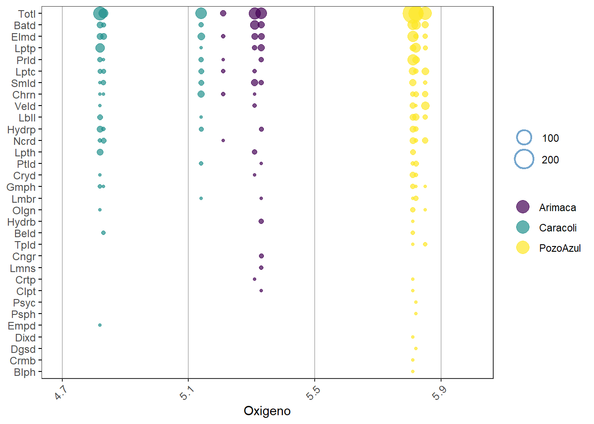
Por niveles de Amonio
Se observa la mayor concentración de taxones abundantes y la mayor riqueza en Amonio entre 0.0001 y 0.05.
# Gráfico mejorado con eje Y ordenado por Salinidad (más abundante en la parte superior)
ggplot(datos1a, aes(x = Amonio, y = Taxas, size = Abundancia, color = Sitio)) +
geom_point(alpha = 0.7) +
scale_size(range = c(1.4, 19)) +
scale_color_viridis(discrete = TRUE) +
scale_size(name = "Tamaño", range = c(1, 8)) +
scale_x_continuous(
limits = c(0.0001, 0.05), # Rangos que dependen de la variable ambiental
breaks = seq(0.0001, 0.05, by = 0.01) # Establecer intervalos de 1.000
) +
theme_bw() +
theme(
panel.grid.major = element_blank(), # Eliminar la cuadrícula principal
panel.grid.minor = element_blank(), # Eliminar la cuadrícula menor
axis.ticks.y = element_line(color = "black"), # Marcas de graduación del eje y
axis.text.x = element_text(size = 9, angle = 45, hjust = 1), # Rotar los valores del eje x a 45 grados
axis.text.y = element_text(size = 9), # Tamaño del texto en el eje y
axis.title.y = element_blank(), # Quitar el título del eje y
) +
geom_vline(xintercept = c(0.0001, 0.0101, 0.0201, 0.0301,
0.0401, 0.0501), color = "gray") +
guides(
size = guide_legend(title = NULL,
override.aes = list(shape = 1,
color = "#377eb8",
stroke = 1.2)), # Grosor de los círculos
color = guide_legend(title = NULL,
override.aes = list(size = 5)) # Elimina el título de la leyenda
)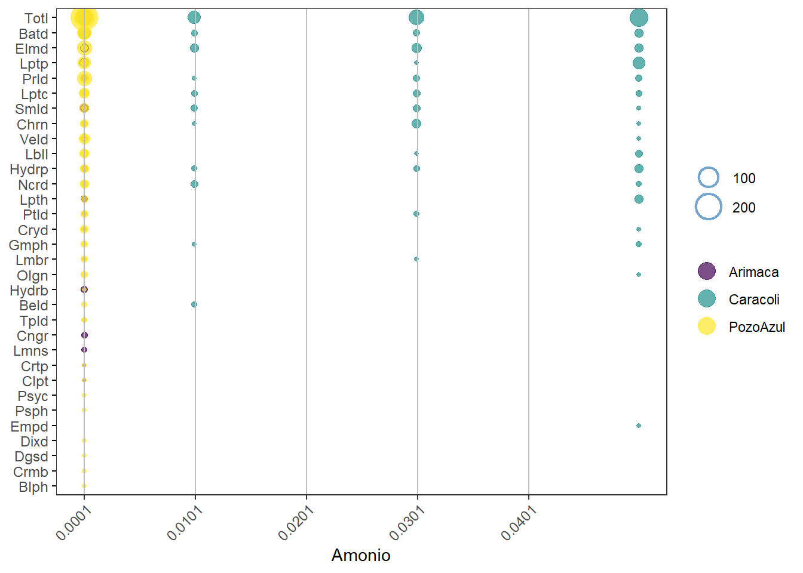
Por niveles de Profundidad Media
Se observa la mayor concentración de taxones abundantes y la mayor riqueza en Profundidad Media entre 0.19 y 0.34.
# Gráfico mejorado con eje Y ordenado por Salinidad (más abundante en la parte superior)
ggplot(datos1a, aes(x = Prof.Media, y = Taxas, size = Abundancia, color = Sitio)) +
geom_point(alpha = 0.7) +
scale_size(range = c(1.4, 19)) +
scale_color_viridis(discrete = TRUE) +
scale_size(name = "Tamaño", range = c(1, 8)) +
scale_x_continuous(
limits = c(0.19, 0.34), # Rangos que dependen de la variable ambiental
breaks = seq(0.19, 0.34, by = 0.05) # Establecer intervalos de 1.000
) +
theme_bw() +
theme(
panel.grid.major = element_blank(), # Eliminar la cuadrícula principal
panel.grid.minor = element_blank(), # Eliminar la cuadrícula menor
axis.ticks.y = element_line(color = "black"), # Marcas de graduación del eje y
axis.text.x = element_text(size = 9, angle = 45, hjust = 1), # Rotar los valores del eje x a 45 grados
axis.text.y = element_text(size = 9), # Tamaño del texto en el eje y
axis.title.y = element_blank(), # Quitar el título del eje y
) +
geom_vline(xintercept = c(0.19, 0.24, 0.29, 0.34), color = "gray") +
guides(
size = guide_legend(title = NULL,
override.aes = list(shape = 1,
color = "#377eb8",
stroke = 1.2)), # Grosor de los círculos
color = guide_legend(title = NULL,
override.aes = list(size = 5)) # Elimina el título de la leyenda
)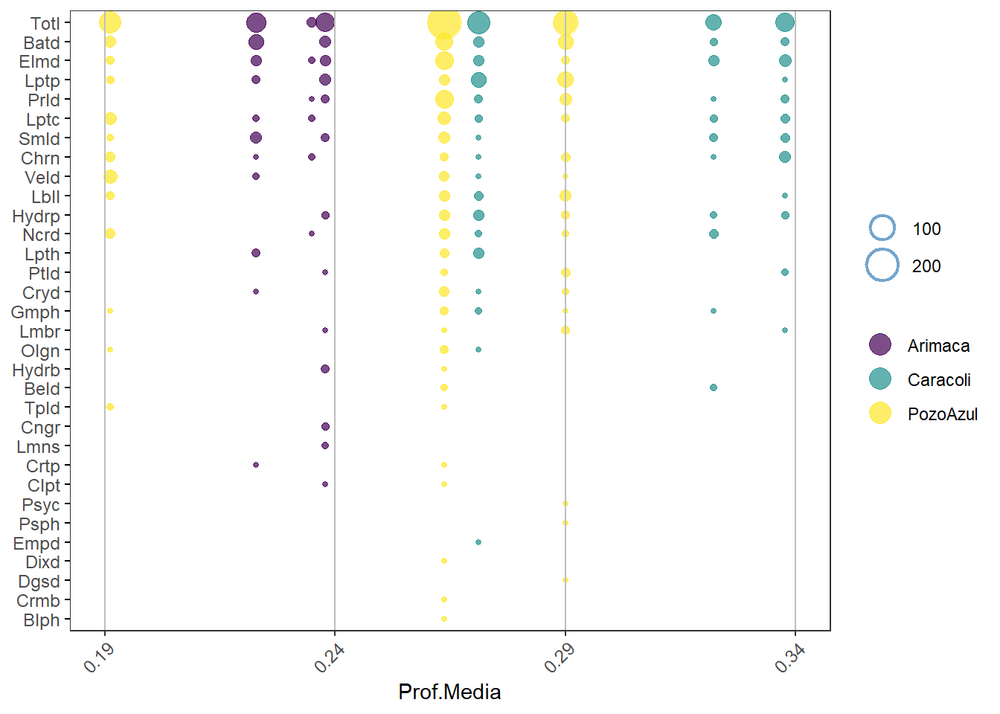
4.5 Diferencias entre los taxones por sitios y por microhábitats.
Para este caso se requiere contar con variables agrupadoras (contar replicas por cada grupo) como los sitios o los microhábitats (Table 7). La bae biol.dif utiliza al comando gather, organiza a los datos de los taxones en una columna con sus valores de abundancias al frente.
# View(biol)
biol.dif <-
biol[,-34] %>%
gather(Taxones, Abundancia, -Sitio, -Microh)
# Impresión de la tabla con los seis (6) primeros datos (filas)
head(biol.dif) %>%
kbl(caption = "", booktabs = F,longtable = T) %>%
kable_classic(full_width = F, html_font = "Cambria")| Sitio | Microh | Taxones | Abundancia |
|---|---|---|---|
| Arimaca | Arena | Baetidae | 0 |
| Arimaca | Grava | Baetidae | 14 |
| Arimaca | Hoja | Baetidae | 31 |
| Caracoli | Arena | Baetidae | 3 |
| Caracoli | Grava | Baetidae | 11 |
| Caracoli | Hoja | Baetidae | 4 |
El siguiente grafico de cajas compara a las abundancias por cada sitio y utiliza a la variable abundancia con la transformación log(10), debido a la cantidad de ceros y valores bajos de abundancia. A pesar de esto, las cajas no se organizan de forma satisfactoria (Figure 6).
# Buscar en google: colorbrewer2
ggplot(biol.dif, aes(x=Sitio, y= Abundancia)) +
geom_boxplot(aes(fill = Sitio)) +
scale_y_continuous(trans = "log10") + # Aplicar la transformación logarítmica
labs(title = "",
x = "Sitios", fill = "Sitios",
y = expression(log[10]~(Abundancia~de~Insectos))
) +
scale_fill_manual(values = c('#fc8d59','#ffffbf','#99d594')) +
theme_bw()+
theme(panel.grid = element_blank())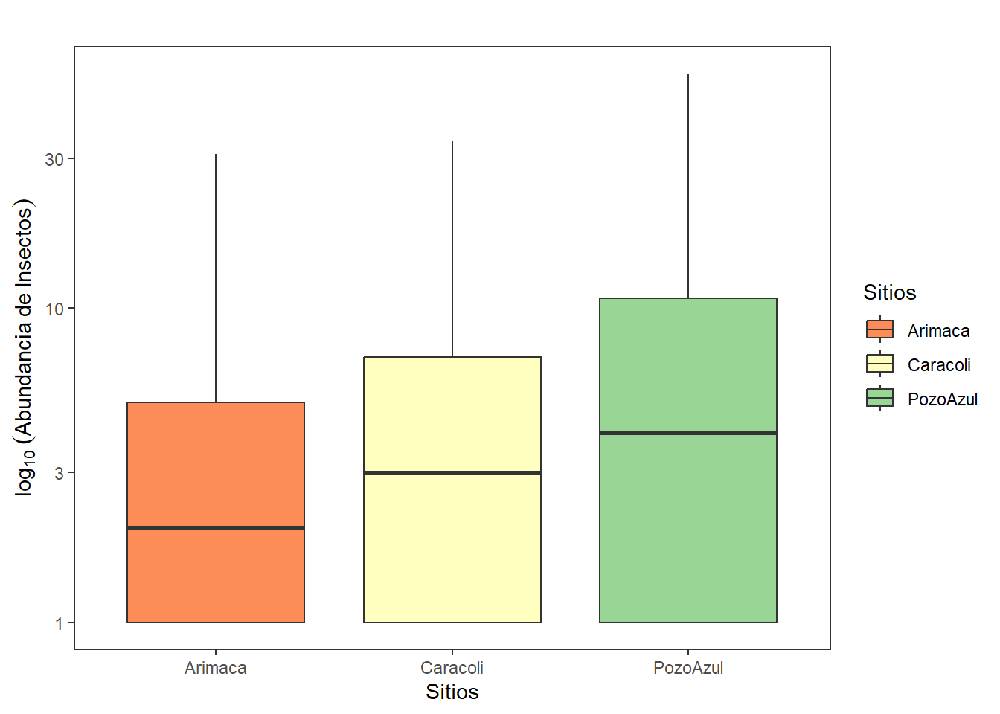
El siguiente grafico de cajas compara a las abundancias por cada microhábitat (Figure 7).
# Buscar en google: colorbrewer2
ggplot(biol.dif, aes(x=Microh, y= Abundancia)) +
geom_boxplot(aes(fill = Microh)) +
scale_y_continuous(trans = "log10") + # Aplicar la transformación logarítmica
labs(title = "",
x = "Microhábitats", fill = "Microhábitats",
y = expression(log[10]~(Abundancia~de~Insectos))
) +
scale_fill_manual(values = c('#fc8d59','#ffffbf','#99d594')) +
theme_bw() +
theme(panel.grid = element_blank())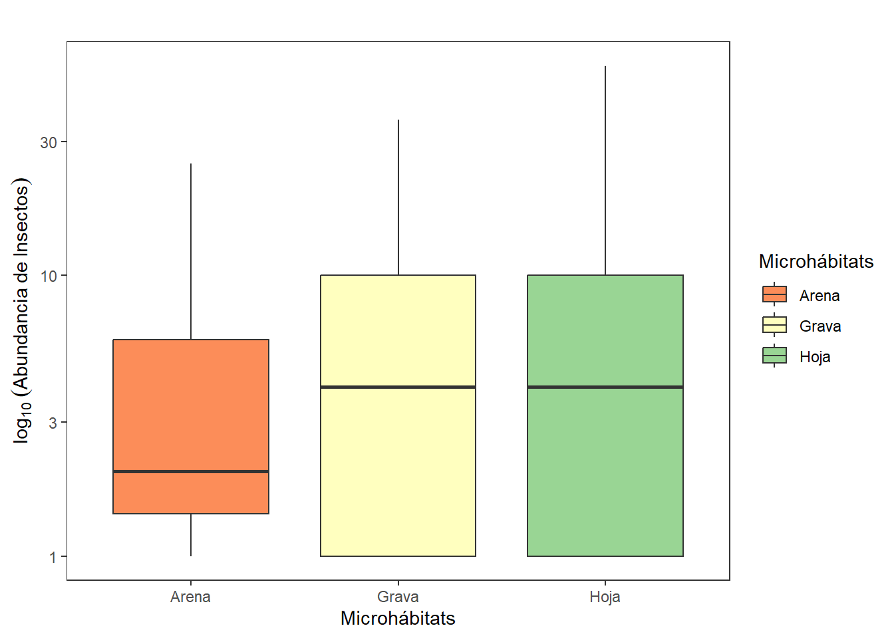
En la Figure 8 se se muetra las diferencias en los valores de abundancia de los insectos, por cada sitio y tipo de microhábitat evaluado.
# Buscar en google: colorbrewer2
ggplot(biol.dif, aes(x=Sitio, y=Abundancia)) +
geom_boxplot(aes(fill = Microh)) +
scale_y_continuous(trans = "log10") + # Aplicar la transformación logarítmica
labs(title = "",
x = "", fill = "Microhábitats",
y = expression(log[10]~(Abundancia~de~Insectos))
) +
scale_fill_manual(values = c('#fc8d59','#ffffbf','#99d594')) +
facet_wrap(~ Sitio,scales="free") +
theme_bw() +
theme(axis.text.x = element_blank()) +
theme(panel.grid = element_blank())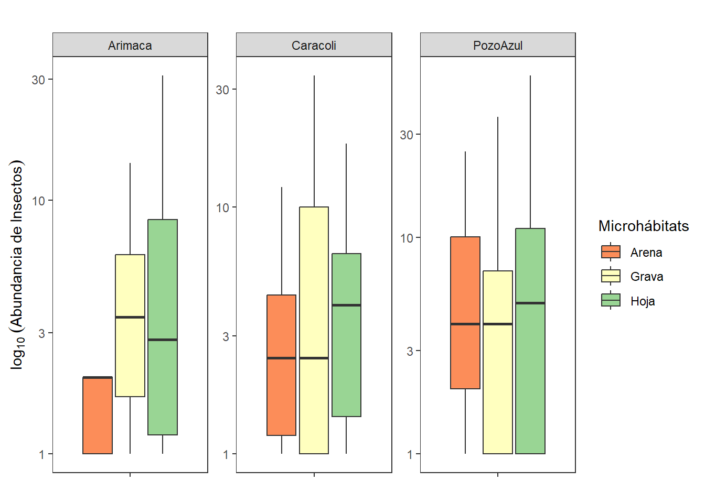
La Figure 9 muestra una forma complementaria a la anterior para evaluar las diferencias en la abundancia de los insectos acuáticos entre sitios y entre microhábitats.
# Buscar en google: colorbrewer2
ggplot(biol.dif, aes(x=Sitio, y= Abundancia)) +
geom_bar(stat="identity",aes(fill = Microh),
position=position_dodge()) +
scale_y_continuous(trans = "log10") + # Aplicar la transformación logarítmica
labs(title = "",
x = "", fill = "Microhábitats",
y = expression(log[10]~(Abundancia~de~Insectos))
) +
scale_fill_manual(values = c('#fc8d59','#ffffbf','#99d594')) +
theme_bw() +
theme(panel.grid = element_blank()) 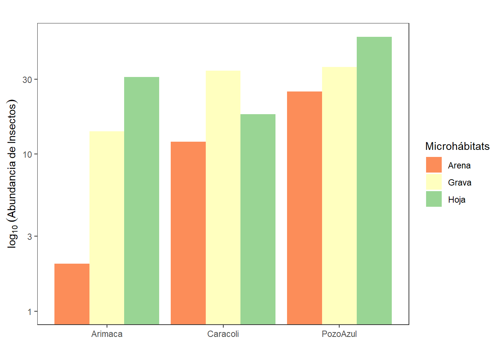
La Table 8 muestra algunos estimadores estadísticos de la abundancia de insectos entre sitios y microhábitats, para poder visualizar diferencias entre los promedios y alguna medida de dispersión (ver Figure 10).
# Resumen estadístico "datos_resum"
datos_resum <-
biol.dif %>% # Base de datos resumida
group_by(Sitio,Microh) %>% # Factor o variable agrupadora
summarise(datos.m = mean(Abundancia), # Media de cada grupo del factor
datos.de = sd(Abundancia), # Desviacioes estándar de cada grupo
datos.var = var(Abundancia), # Varianzas de cada grupo
n.Ab = n(), # Tamaño de cada grupo
datos.ee = sd(Abundancia)/sqrt(n())) # Error estándar de cada grupo
# Impresión de la tabla
datos_resum %>%
kbl(caption = "", booktabs = F,longtable = T) %>%
kable_classic(full_width = F, html_font = "Cambria")| Sitio | Microh | datos.m | datos.de | datos.var | n.Ab | datos.ee |
|---|---|---|---|---|---|---|
| Arimaca | Arena | 0.2580645 | 0.6307531 | 0.3978495 | 31 | 0.1132866 |
| Arimaca | Grava | 2.0322581 | 3.8685387 | 14.9655914 | 31 | 0.6948101 |
| Arimaca | Hoja | 2.2580645 | 6.1208264 | 37.4645161 | 31 | 1.0993329 |
| Caracoli | Arena | 1.1935484 | 2.6002481 | 6.7612903 | 31 | 0.4670184 |
| Caracoli | Grava | 3.2258065 | 6.7117294 | 45.0473118 | 31 | 1.2054622 |
| Caracoli | Hoja | 2.0000000 | 4.2347767 | 17.9333333 | 31 | 0.7605883 |
| PozoAzul | Arena | 2.9354839 | 5.9829507 | 35.7956989 | 31 | 1.0745697 |
| PozoAzul | Grava | 4.4193548 | 8.7322170 | 76.2516129 | 31 | 1.5683525 |
| PozoAzul | Hoja | 9.0967742 | 15.4323358 | 238.1569892 | 31 | 2.7717293 |
La Figure 10 muestra que los datos con los promedios mayores, también presentan mayor dispersión en sus valores (líneas acotadas más largas).
# Figura 1 (f1)
ggplot(datos_resum, aes(x=Sitio, y=datos.m, fill=Microh)) +
geom_bar(stat="identity", color="black",
position=position_dodge()) +
geom_errorbar(aes(ymin=datos.m,
ymax=datos.m+datos.de), width=.2,
position=position_dodge(.9)) +
labs(x="", y = "Abundancia de Insectos",
fill="Microhábitats")+
scale_fill_manual(values=c('#E69F00','#4daf4a','#377eb8')) +
facet_wrap(~ Sitio,scales="free") +
theme_bw() +
theme(axis.text.x = element_blank()) +
theme(panel.grid = element_blank())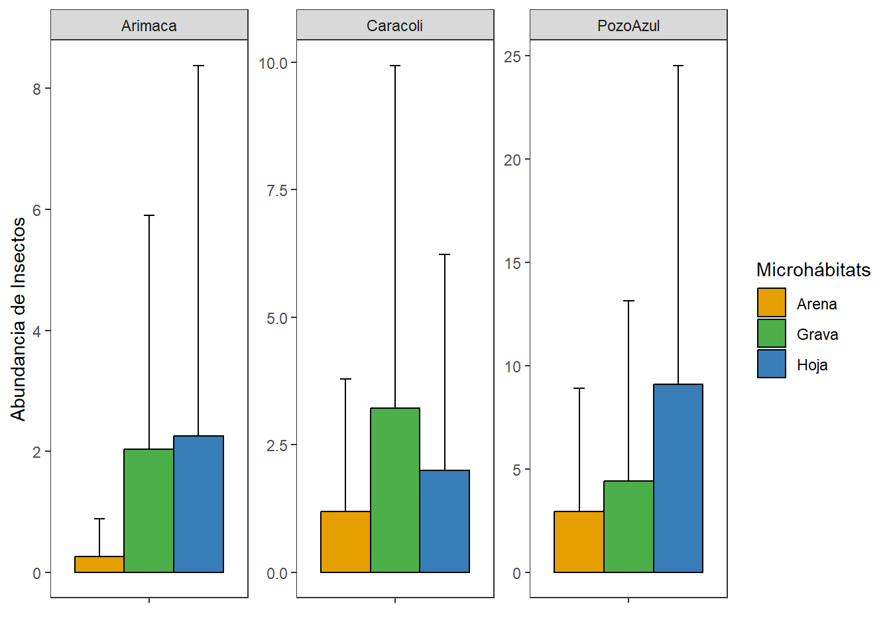
Paso 5. Diversidad alfa
–
5.1 Estimadores clásicos
La Table 9 Muestra los valores promedio de abundancias de macroinvertebrados acuáticos para cada sitio evaluado.
# Nombres abreviados de los taxones
biol1 <-
biol[,c(-2)] %>%
rename_with(~ abbreviate(.x, minlength = 4))
# Promedios de abundancia de los taxones
biol4 <-
biol1 %>%
group_by(Siti) %>% # Agrupamiento por sitios
summarise(across(everything(), ~ mean(.x, na.rm = TRUE)))
# Crear un nuevo dataframe con las dos columnas seleccionadas
biol4 <- data.frame(Sitio= biol4[,1], biol4[, ab])
biol4 %>%
kbl(caption = "", booktabs = F,longtable = T) %>%
kable_classic(full_width = F, html_font = "Cambria")| Siti | Batd | Elmd | Lptp | Prld | Lptc | Smld | Chrn | Lbll | Veld | Hydrp | Ncrd | Lpth | Cryd | Ptld | Gmph |
|---|---|---|---|---|---|---|---|---|---|---|---|---|---|---|---|
| Arimaca | 15.00000 | 7.666667 | 5.666667 | 2.000000 | 1.333333 | 6.000000 | 1.000000 | 0.000000 | 0.6666667 | 1 | 0.3333333 | 1.666667 | 0.3333333 | 0.3333333 | 0.000000 |
| Caracoli | 6.00000 | 13.333333 | 11.666667 | 3.666667 | 4.000000 | 4.333333 | 5.333333 | 2.666667 | 0.3333333 | 5 | 3.0000000 | 3.333333 | 0.3333333 | 0.6666667 | 1.000000 |
| PozoAzul | 31.66667 | 21.666667 | 16.333333 | 23.000000 | 13.666667 | 5.666667 | 6.333333 | 9.666667 | 11.3333333 | 5 | 7.0000000 | 2.000000 | 3.3333333 | 3.0000000 | 2.333333 |
Con los datos de la Table 9, a continuación se calculan algunos índices de diversidad general, en la propuesta de Borcard et al. (2018). q_0, q_1 y q_2 corresponden a los valores de diversidad en términos de riqueza o número de taxones, taxones abundantes de acuerdo a euler elevado a la Shannon y los taxones muy abundantes según el inverso del índice de Simpson, respectivamente. De igual forma se evalúa la unidormidad en la abundancia de los diferentes taxones para cada sitio, con el índice de Pielou.
#
biol5 <- biol4[,-1]
# Estimadores de diversidad alfa (segun Borcard et al. 2018)
N0 <- rowSums(biol5 > 0) # Riqueza de especies
N0 <- specnumber(biol5) # Riqueza de especies (alterno)
H <- diversity(biol5) # Entropía de Shannon (base e)
Hb2 <- diversity(biol5, base = 2) # Entropía de Shannon (base 2)
N1 <- exp(H) # Diversidd de Shannon (base e)
N1b2 <- 2^Hb2 # Diversidad de Shannon (base 2)
N2 <- diversity(biol5, "inv") # Diversidad de Simpson (dominancia)
J <- H / log(N0) # Equidad de Pielou (evenness)
E10 <- N1 / N0 # Equidad de Shannon (Razón de Hill)
E20 <- N2 / N0 # Equidad de Simpson (Razón de Hill)
# Base de datos con los valores de los esimadores de diversidad alfa
d.alfa <- data.frame(Sitio= biol4[,1], q_0= N0,
q_1= round(N1,1), q_2= round(N2,1),
Equidad_J= round(J,2))
# Edición de la tabla para su impresión
d.alfa %>%
kbl(caption = "", booktabs = F,longtable = T) %>%
kable_classic(full_width = F, html_font = "Cambria")| Sitio | q_0 | q_1 | q_2 | Equidad_J |
|---|---|---|---|---|
| Arimaca | 13 | 7.0 | 5.1 | 0.76 |
| Caracoli | 15 | 10.7 | 8.7 | 0.87 |
| PozoAzul | 15 | 11.2 | 9.2 | 0.89 |
–
5.2 Curvas RAD (Localidades y Microhábitats)
Para propósitos de este documento se realizarán los diagramas con los quince (15) taxones de invertebrados más abundantes en las tres localidades evaluadas (biol2). Este diagrama permite hacer una exploración de los patrones de abundancia de los principales taxones de las muestras en comparación, como complemento a los modelos paraétricos a realizar. Se inserta una columna de rangos de abundancia y otra columna de abundancia relativa. Finalmente se filtran a los 15 taxones más abundantes, para que las curvas no se saturen (Table 11).
# Lectura de la base de datos
datos1 <-read_xlsx("datos.gral.xlsx","Taxones2")
# Nombres abreviados de los taxones
datos1 <-
datos1 %>%
rename_with(~ abbreviate(.x, minlength = 4), .cols = -1)
# Reestructurar los datos en formato largo
datos1 <-
datos1 %>%
pivot_longer(
cols = -c(Sitio),
names_to = "Taxas",
values_to = "Abundancia"
)
# Convertir 'Sitio' y 'Taxas' en factores
datos1$Sitio <- as.factor(datos1$Sitio)
datos1$Taxas <- as.factor(datos1$Taxas)
# Calcular la suma de abundancias por taxón y grupo
datos1 <- datos1 %>%
group_by(Sitio, Taxas) %>%
summarise(Abundancia = sum(Abundancia, na.rm = TRUE), .groups = "drop")
# Insertar rango basado en abundancia descendente
datos1 <- datos1 %>%
group_by(Sitio) %>%
mutate(Rango = rank(-Abundancia, ties.method = "min")) %>%
ungroup()
# Calcular abundancia relativa
datos1 <- datos1 %>%
group_by(Sitio) %>%
mutate(Ab_rel = round(Abundancia / sum(Abundancia), 3)) %>%
ungroup()
# Seleccionar los 15 taxones más abundantes
top15_taxas <- datos1 %>%
group_by(Taxas) %>%
summarise(Total_Ab_rel = sum(Ab_rel), .groups = "drop") %>%
top_n(15, Total_Ab_rel) %>%
pull(Taxas)
# Filtrar datos para los 15 taxones seleccionados
datos1 <- datos1 %>%
filter(Taxas %in% top15_taxas)
# Impresión de la tabla con los seis (6) primeros datos (filas)
head(datos1) %>%
kbl(caption = "", booktabs = F,longtable = T) %>%
kable_classic(full_width = F, html_font = "Cambria")| Sitio | Taxas | Abundancia | Rango | Ab_rel |
|---|---|---|---|---|
| Arimaca | Batd | 45 | 1 | 0.319 |
| Arimaca | Chrn | 3 | 9 | 0.021 |
| Arimaca | Cryd | 1 | 14 | 0.007 |
| Arimaca | Elmd | 23 | 2 | 0.163 |
| Arimaca | Hydrb | 4 | 7 | 0.028 |
| Arimaca | Hydrp | 3 | 9 | 0.021 |
La Figure 11 muestra el patrón de distribución de abundancias de los quince taxones más abundantes de invertebrados acuáticos, mostrando que en Pozo Azul se presenta la mayor proporción de famlias dominantes o más abundantes.
library(ggrepel) # insertar rótulos a los puntos
# Ordenar los niveles de los paneles
datos1$Sitio <- factor(datos1$Sitio,
levels = c("Arimaca","Caracoli","Pozo Azul"))
# Figura
ggplot(datos1,
aes(x = Rango, y = Ab_rel, color = Taxas, label = Taxas)) +
geom_point(size = 3) +
geom_text_repel(aes(label = Taxas), hjust = 1, vjust = 1.5, size = 3,
box.padding = 0.4, point.padding = 0.2,
segment.color = "black", # Color de las líneas de conexión
segment.linetype = "dashed", # Líneas punteadas
show.legend = FALSE) +
geom_line(color = "blue") +
scale_x_continuous(breaks = seq(0, max(datos1$Rango), by = 4), # Personalizar eje x
expand = expansion(add = c(0, 0.5))) + # Iniciar en 0 y extender
scale_y_log10() +
labs(
x = "Rangos de Taxas",
y = expression(log[10]~(Abundancia~Relativa)),
color = "Taxas") +
facet_wrap(~Sitio, nrow = 1) +
theme_bw() +
theme(panel.grid=element_blank(),
legend.position = "none", # ← Oculta la leyenda
strip.text = element_text(face = "bold") # Nombres de panel en negrilla
)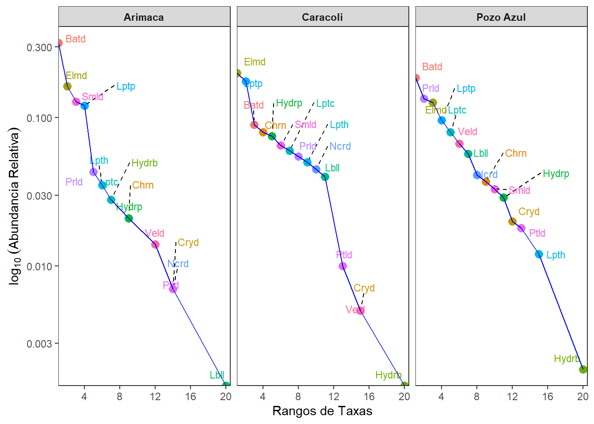
Otra opción de graficar la figura anterior:
# Generar el gráfico
ggplot(datos1,
aes(x = Rango, y = Ab_rel, color = Taxas, label = Taxas)) +
geom_point(size = 4, shape = 21, fill = "white", color = "black", stroke = 1.5) +
geom_text_repel(
aes(label = Taxas), hjust = 1, vjust = 1.5, size = 3.5,
box.padding = 0.4, point.padding = 0.2,
segment.color = "gray70", segment.linetype = "dashed",
show.legend = FALSE
) +
geom_line(color = "blue") +
scale_x_continuous(breaks = seq(0, max(datos1$Rango), by = 4)) + # Eje X ascendente
scale_y_log10() + # Escala logarítmica en el eje Y
scale_color_manual(values = colorRampPalette(c("darkred", "firebrick",
"tomato", "orange"))(15)) + # Colores personalizados
labs(
x = "Rangos de Taxas",
y = expression(log[10]~(Abundancia~Relativa))
) +
facet_wrap(~Sitio, nrow = 1) +
theme_bw(base_size = 14, base_family = "Arial") +
theme(
panel.grid = element_blank(),
panel.background = element_rect(fill = "gray98", color = NA),
plot.background = element_rect(fill = "white"),
strip.background = element_rect(fill = "gray80", color = "gray50"),
strip.text = element_text(face = "bold", size = 12, color = "black"),
axis.text = element_text(color = "gray30"),
axis.title = element_text(face = "bold"),
legend.position = "none"
) 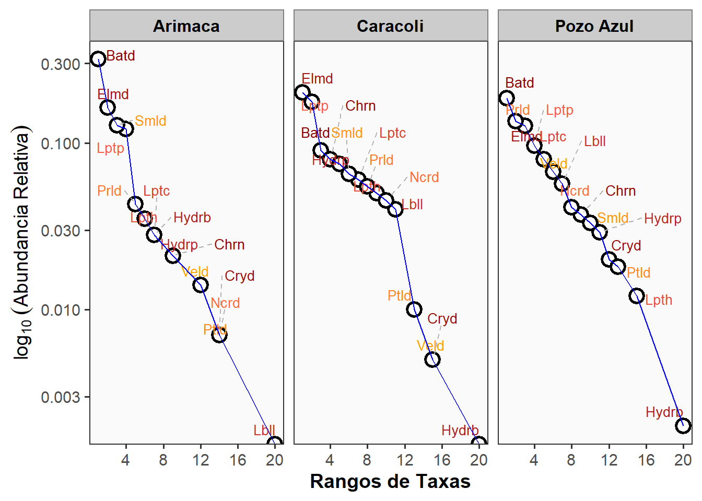
La ?@fig-fig13 muestra el patrón de abundancia por cada microhábitat, siendo la hojarásca la que presenta la mayor proporción, seguida de las gravas y de las arenas.
–
5.3 Diversidad en 4 Pasos. Chao et al. (2020).
Este procedimiento permite calcular los siguientes cuatro pasos o insumos: (1) la completitud o integridad de la muestra, (2) la diversidad asintótica, (3) la diversidad no asintótica y (4) la uniformidad de las abundancias (Chao et al. 2020).
–
5.3.1 Cuatro pasos por Sitios
Primero se corre el procedimiento sobre los datos de la Table 12, con el comando iNEXT4steps, el cual general los insumos de diversidad en los cuatro pasos propuestos por Chao et al. (2020).
library(readxl)
library(dplyr)
library(tidyr)
# Leer los datos
datos1 <- read_xlsx("datos.gral.xlsx", "Taxones2")
# Abreviar nombres de columnas, excepto 'Sitio'
datos1 <-
datos1 %>%
rename_with(~ abbreviate(.x, minlength = 4), .cols = -1)
# Formato largo
datos1 <-
datos1 %>%
pivot_longer(
cols = -Sitio,
names_to = "Taxas",
values_to = "Abundancia"
)
# Asegurar factores
datos1$Sitio <- as.factor(datos1$Sitio)
datos1$Taxas <- as.factor(datos1$Taxas)
# Sumar abundancias por taxón y sitio
datos1 <- datos1 %>%
group_by(Sitio, Taxas) %>%
summarise(Abundancia = sum(Abundancia, na.rm = TRUE), .groups = "drop")
# Calcular abundancia total por taxón para ordenar filas
orden_taxones <- datos1 %>%
group_by(Taxas) %>%
summarise(Total = sum(Abundancia, na.rm = TRUE)) %>%
arrange(desc(Total)) %>%
pull(Taxas)
# Convertir 'Taxas' en factor ordenado según abundancia total
datos1$Taxas <- factor(datos1$Taxas, levels = orden_taxones)
# Reorganizar en formato ancho (sitios como columnas), filas ordenadas por Taxas
datos1_ordenado <-
datos1 %>%
arrange(Taxas) %>%
pivot_wider(names_from = Sitio, values_from = Abundancia)
# Impresión de la tabla con los seis (6) primeros datos (filas)
head(datos1_ordenado) %>%
kbl(caption = "", booktabs = F,longtable = T) %>%
kable_classic(full_width = F, html_font = "Cambria")| Taxas | Arimaca | Caracoli | Pozo Azul |
|---|---|---|---|
| Batd | 45 | 18 | 95 |
| Elmd | 23 | 40 | 65 |
| Lptp | 17 | 35 | 49 |
| Prld | 6 | 11 | 69 |
| Lptc | 4 | 12 | 41 |
| Smld | 18 | 13 | 17 |
A continuación se ejecutan los 4 pasos de valoración de diversidad alfa, propuestos por Chao et al. (2020). Esto se realiza con el comando iNEX.4steps.
Nota: iNEX.4steps es la librería que permite correr los 4 pasos que se describen a continuación. Algunas versiones de esta generan cambios en los nombres de los insumos, para lo cual es apropiado revisar los tutoriales como help(iNEXT4steps), en la parte de ejemplos con datos de abundancia. Allí se indicará la forma correcta de correr el anterior comando.
# Lectura de la base de datos
biol.sit = data.frame(datos1_ordenado[,2:4])
# Resultados de la prueba de diversidad alfa en 4 pasos
result1 <- iNEXT4steps(data = biol.sit,
datatype = "abundance")
# result1$summarya. Paso 1. Perfil de completitud
El perfil de completitud indica que las dos muestras (sitios) no son completas para el primer orden de diversidad “q=0” representado por los valores de riqueza de taxones (completitud < 0.9) (Table 13), lo cual puede ser un indicador de requerimiento de mayor esfuerzo de muestreo o del efecto del caudal que si es en periodo de lluvias puede ocasionar lavados frecuentes de estos organismos.
Nota: en caso que el siguiente comando no se ejecute, se debe a que el paso 1 (perfil de completitud) presenta un nombre diferente, para lo cual se sugiere ejecutar el siguiente comando, que muestra los insumos de este ejercicio: names(result1$summary). Para este caso, los insumos son:
names(result1$summary)[1] "STEP 1. Sample completeness profiles"
[2] "STEP 2b. Observed diversity values and asymptotic estimates"
[3] "STEP 3. Non-asymptotic coverage-based rarefaction and extrapolation analysis"
[4] "STEP 4. Evenness among species abundances of orders q = 1 and 2 at Cmax based on the normalized slope of a diversity profile"Es así como el primer paso debe copiarse y pegarse tal como aparece en el resultado anterior. así:
“STEP 1. Sample completeness profiles”
# Paso 1. Perfil de completitud
result1$summary$"STEP 1. Sample completeness profiles" %>%
kbl(caption = "", booktabs = F,longtable = T) %>%
kable_classic(full_width = F, html_font = "Cambria")| Assemblage | q = 0 | q = 1 | q = 2 |
|---|---|---|---|
| Arimaca | 0.68 | 0.96 | 1 |
| Caracoli | 0.75 | 0.97 | 1 |
| Pozo.Azul | 0.41 | 0.98 | 1 |
b. Paso 2. Perfil asintótico
El perfil asintótico muestra la relación entre la diversidad observada y la estimada, en ese sentido, la diferencia define a la diversidad no detectada (sin.det). Pozo Azul y Caracolí son los sitios con mayor cantidad de taxones no detectados (Table 14).
Nota: siguiendo con los insumos de names(result1$summary), el paso 2 se debe copiar y pegar en el siguiente fragmento de esta manera: “STEP 2b. Observed diversity values and asymptotic estimates”
asinto es la manera como se asignará la tabla resultado de este segundo paso, para luego incluirle una columna de taxones sin detectar, que mostrará que tan completa es cada muestra (sitio evaluado).
# Asignación del paso 2 como "asinto"
asinto = result1$summary$"STEP 2b. Observed diversity values and asymptotic estimates" A continuación se crea la columna de taxones sin detectar y se asigna como sin.det. Esta columna es el resultado de la diferencia entre la diversidad estimada (TD_asy) y la diversidad observada (TD_obs), lo cual permitirá conocer si las muestras son completas (sus pendientes se vuelven asintóticas o se estabilizan o por el contrario no son asintóticas por haber taxones sin detectar hasta en el doble de su proyección, ver Figure 12). asinto$TD_asy es la diversidad asintótica estimada, asinto$TD_obs es la diversidad observada u obtenida en campo
Nota: En caso que los nombres de los insumos hayan cambiado, se requiere usar el comando names, para encontrarlos:
names(asinto)# Nueva columna de la tabla, titulada "sin.det"
asinto <-
asinto %>%
mutate(sin.det = round(TD_asy - TD_obs))La Table 14 es editada para que los nombres de las columnas estén en español y se incluya la columna de taxones sin detectar (Sin.Det). asinto$qTD son los tres ordenes de diversidad q=0 o Riqueza de taxones, q=1 o diversidad de Shannnon (e^H) y q=2 o diveridad de Simpson (1/Simpson), asinto$TD_asy es la diversidad asintótica estimada, asinto$TD_obs es la diversidad observada u obtenida en campo, asinto$sin.det son los taxones no detectados por cada órden de diversidad.
Nota: En caso que se requiera realizar algún ajuste en el siguiente comando, habrá que volver a correr todo el paso 2.
# Edición de la tabla al español
asinto <- data.frame(Ensamblaje = asinto$Assemblage,
Estimador = asinto$qTD,
D.Observada= asinto$TD_obs,
D.Estimada = asinto$TD_asy,
Sin.Det = asinto$sin.det )
asinto <-
asinto %>%
mutate(Estimador = recode(Estimador,
"Species richness" = "q=0, Riqueza",
"Shannon diversity" = "q=1, Shannon",
"Simpson diversity" = "q=2, Simpson"))
# Tabla con insumos del paso 2
asinto %>%
kbl(caption = "", booktabs = F,longtable = T) %>%
kable_classic(full_width = F, html_font = "Cambria")
# Algunas versiones de iNEXT requieren este comando:
# mutate(sin.det = round(Taxonomic.Estimator - Taxonomic.Observed))| Ensamblaje | Estimador | D.Observada | D.Estimada | Sin.Det |
|---|---|---|---|---|
| Arimaca | q=0, Riqueza | 19.00 | 27.94 | 9 |
| Arimaca | q=1, Shannon | 9.12 | 10.09 | 1 |
| Arimaca | q=2, Simpson | 6.02 | 6.25 | 0 |
| Caracoli | q=0, Riqueza | 19.00 | 25.22 | 6 |
| Caracoli | q=1, Shannon | 11.69 | 12.48 | 1 |
| Caracoli | q=2, Simpson | 9.14 | 9.54 | 0 |
| Pozo.Azul | q=0, Riqueza | 28.00 | 68.42 | 40 |
| Pozo.Azul | q=1, Shannon | 13.47 | 14.21 | 1 |
| Pozo.Azul | q=2, Simpson | 10.10 | 10.29 | 0 |
c. Paso 3. Perfil no asintótico
El análisis no asintótico, compara a los paisajes con una cobertura similar de 0.974, definiendo a pozo Azul como la localidad de mayor diversidad, seguida de Caracolí y de Arimaca (Table 15).
# Paso 3. Perfil no asintótico basado en interpolación y extrapolación
result1$summary$"STEP 3. Non-asymptotic coverage-based rarefaction and extrapolation analysis" %>%
kbl(caption = "", booktabs = F,longtable = T) %>%
kable_classic(full_width = F, html_font = "Cambria")| Cmax = 0.978 | q = 0 | q = 1 | q = 2 |
|---|---|---|---|
| Arimaca | 23.36 | 9.67 | 6.13 |
| Caracoli | 19.83 | 11.81 | 9.20 |
| Pozo.Azul | 23.64 | 13.13 | 9.96 |
d. Paso 4. Uniformidad
El patrón de uniformidad es elevada y muy similar entre las localidades (Table 16).
# Paso 4. Perfil de uniformidad
# Paso 4. Perfil de uniformidad
result1$summary$"STEP 4. Evenness among species Abundancias of orders q = 1 and 2 at Cmax based on the normalized slope of a diversity profile" %>%
kbl(caption = "", booktabs = F,longtable = T) %>%
kable_classic(full_width = F, html_font = "Cambria")1. Figuras del perfil asintótico (paso 1)
# Figura del paso 1. Completitud de las muestras.
result1$figure[[1]] +
scale_x_continuous(
limits = c(0, 2), # Rango del eje x
breaks = seq(0, 2, by = 1)) + # Intervalos del eje
labs(x="Orden q", y="Completitud de la muestra",
title = "Paso 1. \nPerfil de Completitud") +
theme(panel.grid=element_blank())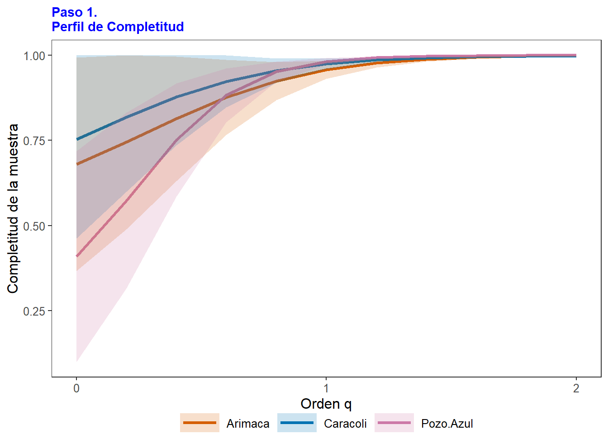
# Líneas verticales resaltando cada orden q (capa adicional)
# geom_vline(xintercept = c(1,2),
# color = "gray", linetype = "dotted")2. Figuras del perfil asintótico (paso 2)
La curva de rarefacción y extrapolación, muestra que en pozo Azul se presenta mayor riqueza de taxones (q=0) y taxones abundantes (q=1) y muy abundantes o dominantes (q=2), pero las tres muestras no se estabilizan en q=0 ni proyectandose al doble de la abundancia observada (líneas punteadas), lo cual reafirma el requerimiento de un mayor esfuerzo de muestreo para poder detectar un mayor número de taxones en cada localidad (Figure 12).
# Paso 2.1. Figura del tamaño basado en rarefacción / extrapolación
result1$figure[[2]]+
labs(x="Abundancia", y="Diversidad - No. taxas",
title = "Paso 2.1. \nTamaño basado en Rarefacción/Extrapolación") +
scale_linetype_manual("",values = c(1,2),
labels=c("Rarefacción","Extrapolación")) +
theme(panel.grid=element_blank())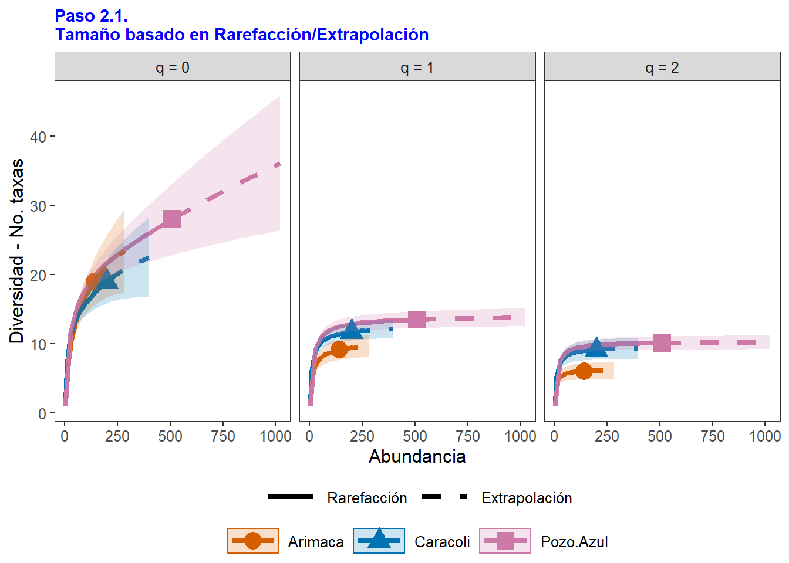
3. Figuras del perfil no asintótico (paso 3)
Estas curvas complementan al perfil no asintótico relacionado en la Table 15. Se observa que todas alcanzan la cobertura máxima de 1 (eje x de Figure 13) y que hay pocas diferencias apreciables entre la diversiad de cada sitio comparado.
# Paso 3. Figura del perfil no asintótico basado en rarefacción/extrapolación
result1$figure[[4]]+
labs(x="Cobertura de los sitios", y="Diversidad de taxones",
title = "Paso 3. \nPerfil de cobertura basado en Rarefacción/Extrapolación") +
scale_linetype_manual("",values = c(1,2),labels=c("Rarefacción","Extrapolación")) +
theme(panel.grid=element_blank())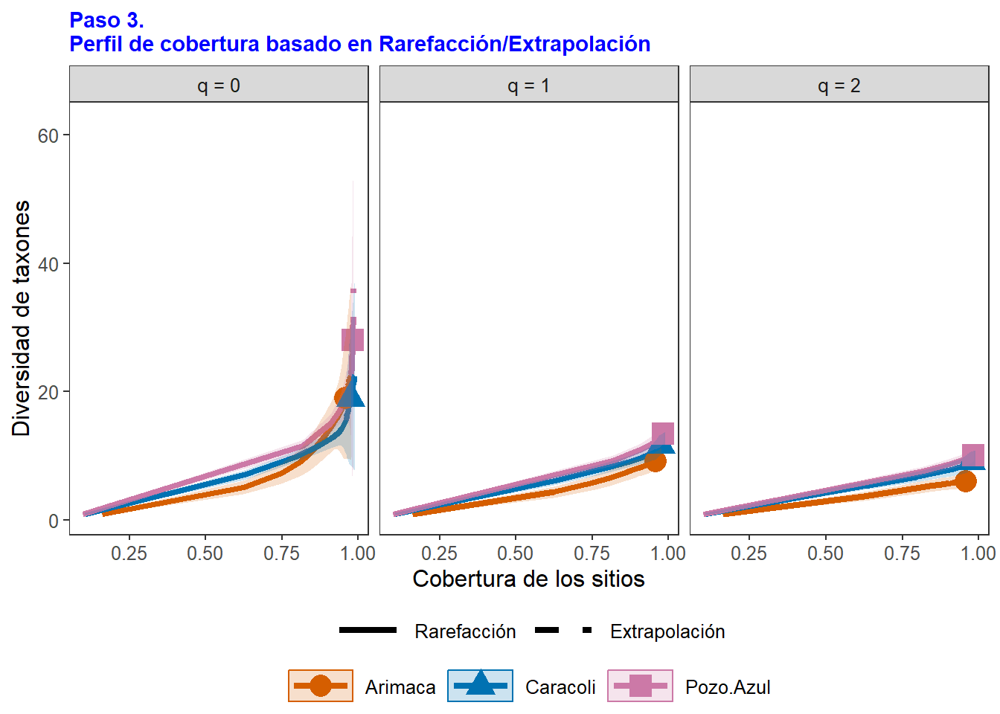
4. Figuras del perfil de uniformidad (paso 4)
# Paso 4. Figura del perfil de uniformidad
result1$figure[[5]] +
scale_x_continuous(
limits = c(0, 2), # Rango del eje x
breaks = seq(0, 2, by = 1)) + # Intervalos del eje
labs(x="Orden q", y="Uniformidad",
title = "Paso 4. \nPerfil de Uniformidad") +
theme(panel.grid=element_blank())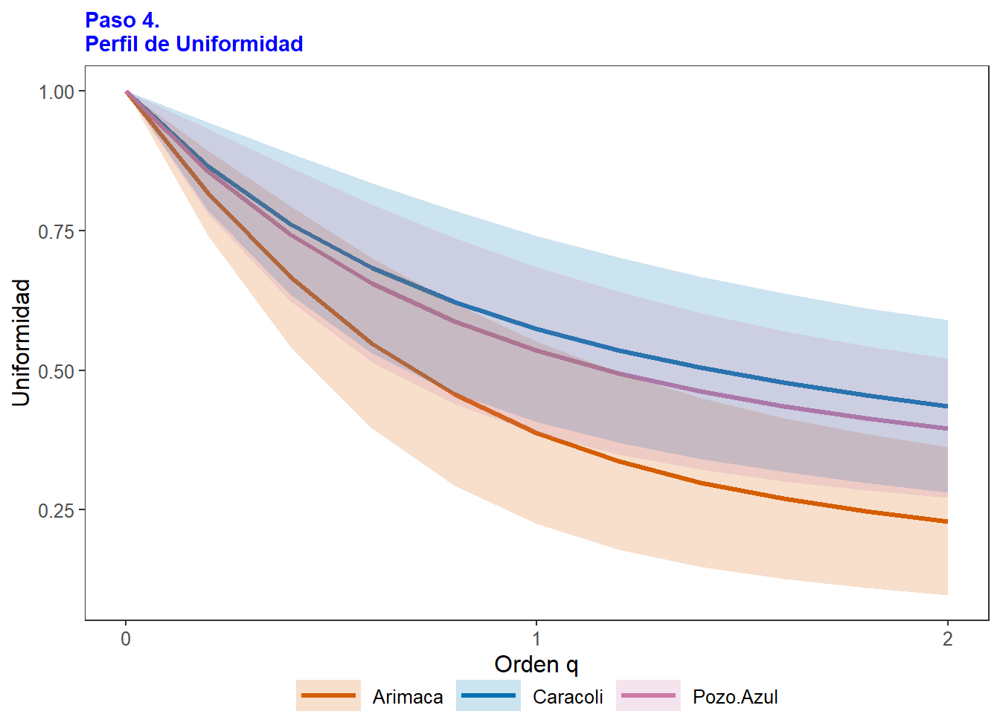
# Líneas verticales resaltando cada orden q (capa adicional)
# geom_vline(xintercept = c(1,2),
# color = "gray", linetype = "dotted")
Taller para la casa
- Con los datos tabulados de campo realizar los procedimiento para la exploración gráfica de relaciones, diferencias entre sitios y microhábitats, así como el análisis de diversidad alfa realizado en este taller.
- Inluir en el análisis el cálculo de los modelos de rango - riqueza - abundancia (RAD) del taller 8 en el siguiente ENLACE y analizar los resultados.
- Incuir el cálculo de diversidad alfa por microhábitats, con la propuesta de cuatro pasos de Chao et al. (2024).
- Realizar el resto de procedimientos descritos en la guía de campo (ENLACE).